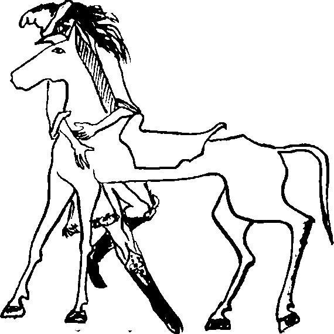

950 yılı Mayıs ayının en sonlarında ılık bir gündü. Sanırım 28 Mayıs Salı günüydü. Yalnız bir atlı, son altı gündür yaptığı gibi Selenge Irmağı’nın sol yakası boyunca “geriye,” günbatısına doğru hayvanını sürüyordu. Hangay’dan Selenge kıyısına inmek için Orhon Irmağı boyunca at sürdüğü yedi günü de sayınca, tam on üç gündür at sırtındaydı. Dik başlı, kalın kısa boyunlu, sarı toprak donlu, kısa kara yeleli ve düğümlenmiş kara kuyruklu, alçak cidagolu bir bozkır tarpanı olan at, arık ve bitkindi. Atlının kendisi de pek iyi durumda görünmüyordu. Hem yorgun hem de argındı. Üstündeki giysileri pek yoksulca olan atlının sanki arkasından albızlar kovalıyormuş gibi bir hali vardı. Altı gündür tan atarken tarpanına atlıyor, hayvanı hiç durdurmuyor, olsa olsa bazen tırısa geçirerek biraz dinlendiriyordu. Ancak güneş balarken atından iniyor, Selenge kıyılarındaki yüksek boylu kamışların arasına saklanarak dinlenmeye çalışıyordu.
Uzuna yakın orta boylu, ince yapılı, genişçe omuzlu, uzun kapkara saçlı, mavimsi gri, kısık gözlü, elmacık kemikleri oldukça çıkık, düz burunlu, ne çok yuvarlak ne çok uzun yüzlü, taze bir yiğitti. Yirmi yaşında ya var ya yoktu. Eskimiş, lime lime olmuş çapanı, sırtına çapraz astığı kısa, katı boynuz yayı, belindeki düz süvari kılıcı, sadağındaki boy boy, cins cins, hepsi kayın ağacından yapılma doksan tane oku, eskimesine karşın renk renk işlemeli deri çizmeleri, üzeri nakışlı beyaz keçe yancığı, başındaki kızıl börkü ve hepsinden çok, belindeki altın tokalı deri kemeri, genç adamın bir zamanlar daha iyi günler görmüş olduğunu gösteriyordu.
Kemerin tokalarının biri bir sığın diğeri bir kartal veya grifon şeklinde tasarlanmıştı. Kemerinin iki ucu kavuşunca, kanatlı yaratık, sığına saldırıyormuş gibi görünüyordu, işinin ehli bir sanatkârın elinden çıkmıştı kemer. Hayvan üslubunda, bozkır zevklerine uygun olarak yapılmıştı ama altın işçiliğinin inceliği ve hayvanların gövdelerindeki ayrıntılar daha çok Akdeniz –belki de Karadeniz– havzasını işaret etmekteydi. Belki de Baktirya bölgesinde yüzyıllar önce bir devlet kuran Orta Asya Yunanlılarının hizmetinde bulunmuş bir kuyumcunun işiydi.
Sonradan Moğolistan olarak tanınacak bu bozkırda, atlılar böyle tek başlarına ve tek atla pek yolculuk etmezlerdi. Genelde bir veya iki yedekleri olur, hiç eyerden inmeksizin, üzerinde bulundukları attan yeddikleri yedeğe geçerlerdi. Ayrıca ortalıkta birkaç at olursa, yolculuktaki kan ihtiyacı daha iyi karşılanır veya atlardan yalnız biri bu iş için sonuna kadar kullanılır, en sonunda da kazanı boylardı. Ama genç adamın bir yedeği yoktu. Çok kalın olmayan, küçük bir halı gibi dürülmüş, yassı, uzun bir denkten ibaret eşyasını da terkide taşıyordu. Sazlığın içine iyice gizlediği atının boyun damarını, elinde tuttuğu kara volkan camıyla açıp akşam yemeği için biraz kan boşaltmak isterken, birden ne kadar şanslı olduğunu düşündü.
İki yüzyıldan uzun bir süredir tarih sahnesinden silinmiş olan Doğu Köktürk devletinin yaşayan son prensi Tengere Tardu Tigin, atalarından Tongra Tigin’in mezarındaki balballar kadar sessiz olmak zorundaydı. Olduğu yerde sinebildiği kadar sindi. Sırtından yayını çıkardı. Okluğundan seçerek aldığı kemik uçlu bir oku yayına, sağ dizini ise yere koydu. Sol eliyle yayını çekti ve kirişi bıraktı. Tam isabet! Otların arasından başının arkası görülen uzun kulakların sahibi, gövdesine yediği okun şiddeti ile öne devrildi.
Tengere Tardu Tigin’in tavşanın kendi attığı okla ölmediğini anlaması uzun sürmedi. Hayvancık galiba bir iki gündür olduğu yerde duruyordu. Etinin sertliğine bakılırsa da büyük olasılıkla yaşlılıktan ölmüştü. Peşine düşenler yüzünden ava vakit ayıramadığı için günlerdir aç gezen ve son çare olarak bugün biraz sıcak at kanı içmeye hazırlanan Tigin, bunlar üzerine pek kafa yoracak durumda değildi. Ateş yakmaksızın tavşanı çiğ çiğ gövdeye indirdi. Ekşimsi tavşan etini bastıracak kımızı olmadığı için biraz hayıflandı. Atının yularına eklediği uzun urganı bileğine doladı. Eyeri başının altına yastık yaptı ve biraz uyumaya çalıştı. Beceremedi, düşünceye daldı.
İkinci Doğu Köktürk devleti 742 yılında, içerden ve dipten gelen bir vuruşla, yani ayaklanan Uygur, Basmıl ve Karlukların saldırıları üzerine çökmüştü. Ötüken’e, önce Basmılların önderi olan ve kendi de Arsılan sülalesinden gelen Kağan Ozmış egemen oldu. Ozmış’ın 744’te öldürülmesinden sonraki yüzyıl boyunca Uygurlar büyük bir kağanlık olarak ortaya çıktılar. 839 yılında tüm bozkırı kasıp kavuran ve büyükbaş hayvanları yalayıp yutan yuttan, o büyük kıtlıktan çıkan Kırgızlar da, “kıtlıktan çıkmış gibi saldırdılar” denmesin diye bir yıl bekledikten sonra Uygurlara saldırmış ve bu devleti yerle bir etmişlerdi, Ötüken’le pek ilgilenmeyen Kırgız kabile birliği, yüz yıldan kısa bir sürede dağılmış gitmişti.
Şimdi Ötüken Yış’ın durumu tam bir karmaşadan başka bir şey değildi. Kitanlar ve daha başka Moğol ve Tunguz kökenli boylar, Güney Çin’i egemenlikleri altında tutan, Kuzey Çin’i de ele geçirmeye uğraşan Sung hanedanıyla ve birbirleriyle çekişiyor, Doğu bozkırlarını denetimleri altına almaya çalışıyorlardı.
Bütün bu kavimlerin bilmediği, Kutlu Ötüken Ormanının kuytuca bir yerinde hâlâ bir avuç Köktürk’ün yaşadığıydı. Hangay Dağları’nın kuzey yamaçlarında, Orhon nehrinin kaynağı yakınlarındaki kutsal atalar mağarasını, mağaranın önündeki demir örsü ve küçük taş sunağı bekleyen ve inançları gereği bir türlü bölgeden ayrılamayan bu bir obalık insanın durumu bu karmaşa ortamında iyice bozulmuştu. Yüksek uyum güçlerine karşın Ötüken’de tutunmaları günden güne zorlaşıyordu. Önce Uygurlar zamanında görünürde Maniheist olmuşlar, sonra Kırgızlar döneminde yürekten Şamanizme dönmüşler, şimdi ise artık hangi kabile bozkırı kontrol edebilirse onun dinine girmeye hazır, bekliyorlardı.
Arsılan soyundan Tengere Tardu Tigin, işte bir hafta öncesine kadar kendilerinin Köktürk olduklarını bile saklamak zorunda olan bu insanların arasında yaşamaktaydı. Tengere’nin büyük atası ve Bilge Kağan’ın hiçbir zaman tahta çıkamayan üçüncü oğlu Urungu inanç Tigin, büyük kırımdan, tapınaktaki bahşılar arasına karışarak kurtulabilmiş, fakat bir tigin olduğunu asla unutmamıştı. Gerçek yaşamda odunculuk ve koyunculuk yapan çocukları da geleneği ayakta tutmuşlardı, iki yüz yıl kadar sonra, ailedeki tek erkek olduğu için tiginlik sırası şimdi Tengere’deydi. Ailesinde aktarılan bir inanca göre, bugün tigin olan yarın kağan olurdu.
Bütün bu umutlar, iki hafta kadar önce birden sona ermiş ve iki yüz yıllık düş bitmişti. Birkaç yoksul yanaşma sayılmazsa, obanın ok çeker tek kişisi olan Tengere, güç bir kıştan çıkan arık, sayılan iyice azalmış koyunlarını daha da azaltmak istemediğinden, sunağın yiyecek gereksinmeleri için ava çıkmıştı. Tengerere’nin yokluğunda birkaç yüz kişilik bir Kitan kolu obayı basmış, direnmeye bile çalışmayan bu insanların işe yararlarını sucuk gibi bağlayarak yedek atlarına bindirmişlerdi. Obanın iki yaşlısından lnançu Yaşıl Şaman tüm inananların köleliğe götürüldüğünü görünce “ma’minim... ma’minim” diyerek kalp krizi geçirmiş, ölmüştü. Karısı Yenge İsen Oyun, kocasının göğsüne kapanmış, kendisini ayırmak isteyen bir Kitan yağmacısının okuyla başına indirdiği sert darbelere dayanmış, ak saçlı başı kızıl kanlar içinde kalmış, sonunda iyice kızıp köpüren Kitan tarafından karın boşluğu ve göğsü tekmelenerek olduğu yerde bırakılmıştı. Tengere onu bulduğunda kırık üç kaburgası yüzünden zorlukla soluk alıyordu. Ölmek üzereydi. Tengere’nin küçük deri tulumundan verdiği suyu içmek istemedi.
Büyük sıkıntılarla konuşabiliyordu:
“Biz artık bittik tükendik, büyüklük taslamanın çağı değil oğul, günbatısına, geriye git. Batı Kağanını, Hanlar Hanı Bayındır Han’ı bul. Bu kırgınlık bitsin artık! Önünde yer öp, ‘ilerideki kardaşların, Tabgaç boyundaki kökdaşların, Hangay’daki soydaşların kamusu ölmeli oldu, Han’ım sen sağ ol’ de... Yapacaksa yuğumuzu o yapsın. Verecekse aşımızı o versin, varsa ala aygırları bizler için boğazlasın...”
Ilınmış, deri kokulu sudan bir yudum aldı ve 950 yılının 14 Mayıs Salı günü, saat öğleden sonra beşe on kala son nefesini verdi. Bozkırın büyük ve kanlı tarihinde daha önce yüz binlerce kez –tam olarak 130.867 kez– olduğu gibi, üyeleri bir kez daha bir araya gelmemek üzere, bir oba dağıldı. Bir bozkır imparatorluğu daha henüz doğmadan boğuldu. Cumhurbaşkanlığı forsunuza bir yıldız daha giremeden eksildi.
Sonra Tengere Tardu Tigin...
Albız’ın dev gibi bir paragrafa başlamak için olsa gerek, büyük bir soluk aldığını gören, geceki Çiçek ve Şeftan maceralarından dolayı sinirleri iyice hırpalanmış olan Tankut Argun, bayılıyorum zannetti. Dayanamadı:
“Yav Albız Dede vallahi baydın, kıydın içimizi! Tarım Meslek’teki tarih hocam Heredot Naciye’yi mumla arattın! Ucuk-bucuk-gucuk! Bize ne Basmıllardan, Kitanlardan, öldürdün bizi be dede!”
Albız, Tankut’un bu feryat gibi çıkışı üzerine durakladı, Argun Afakinin yüzüne baktı. Argun doldurup doldurup bir kenara koyduğu Bristol kartlarının sonuncusundan başını kaldırdı: “Aziz Albız, sizi böldük. Kusura bakmayınız. Bilginizin kuşattığı sınırların genişliğine, hafızanıza, ayrıntıya verdiğiniz öneme, tarihler ve zaman konusundaki dakikliğinize hayran olmamak elde değil. Ayrıca bazı Türklerin de bir zamanlar inançlarını sakladıklarını, bir nevi dönme hayatı yaşadıklarını, dahası, ha babam dönüp durduklarını öğrendim sizden. Öğrendim ve onlar adına utandım. Has Türkler olduğuna emin misiniz bunların? Neyse, nasıl desem, bizi ‘kuzucuklarım’ diye dinlemeye davet ettiniz ama... ama bir kuruluk, bir dıştan bakış, bir vurdumduymazlık, bir umursamayış... evet... Aziz Albız, lütfen darılmayınız ama bir duygu eksikliği var bu anlatımınızda. Üstelik Sayın Albız, bunu siz de anladınız. Zannediyorum ki tavşanı vurma sahnesindeki o yapay komiklik, Kırgızların Uygurlara saldırışını anlatırken kullandığınız o alaylı dil... Bu, şey... yavanlığı aşma çabalarıydı...”
Albız, sesinde en ufak bir alınma belirtisi olmaksızın sordu: “Susayım mı yani? Hay hay.”
“Yoo, yoo! Siz Tankut’a bakmayın. Susmayın lütfen, biz bilgiye açız...” dedi Argun ve utanmış bir tavırla ekledi:
“Açız da biraz lezzetli bir şeyler yemek istiyoruz...”
Albız, küçük, boğuk bir kahkaha attı:
“Tengere’nin kendisini dinleyin o zaman! Haydi acıdım size. Kendi Türkçesi ile değil ama, bugünkü dille söylesin. Şöyle nasıl: ‘Mengü Tanrı’nın gücüyle. Oğlan adım Bars Külük. Er adım Tengere Tardu. Tengere Tardu Tigin ben. Budunum, Oğuzum. Bu sözümü duyun işitin’.”
İki Argun birden “evet, evet...” diye çığrıştılar.